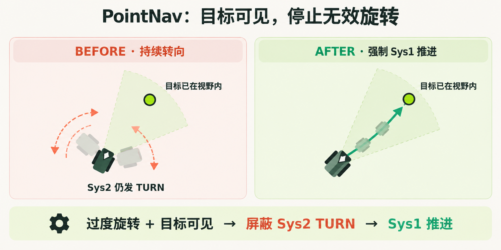
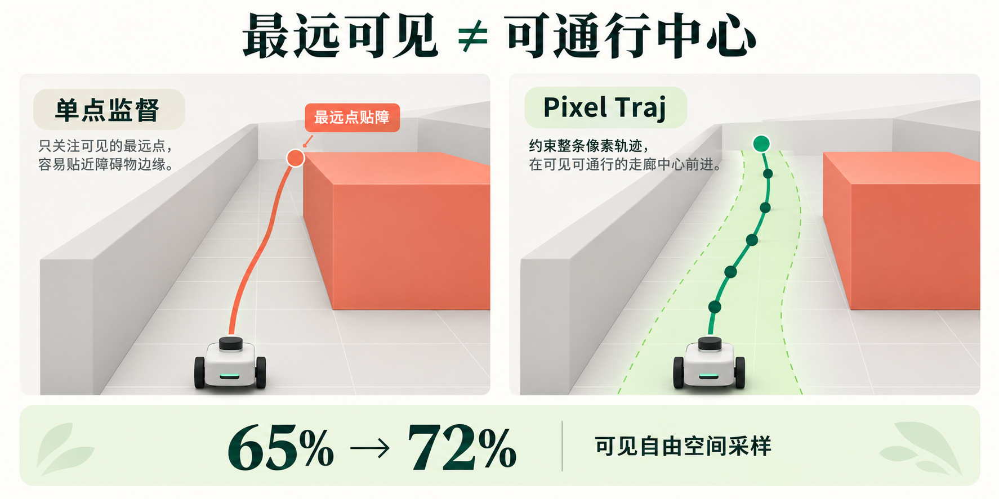
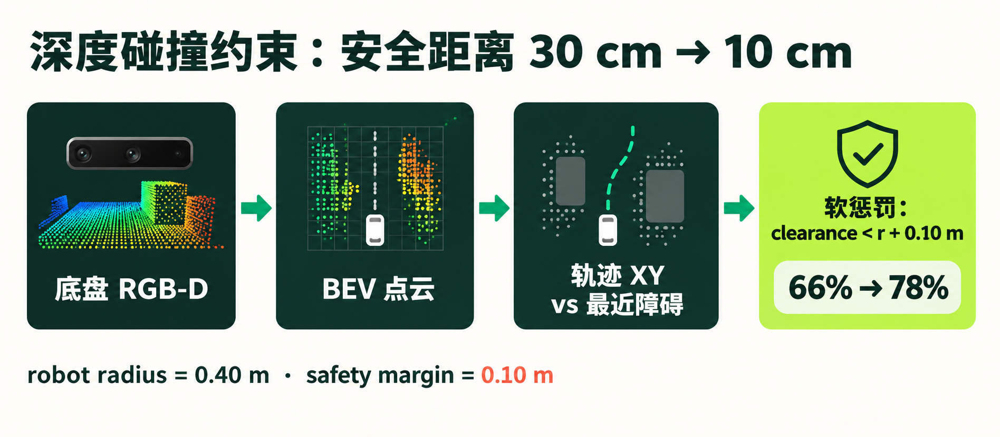
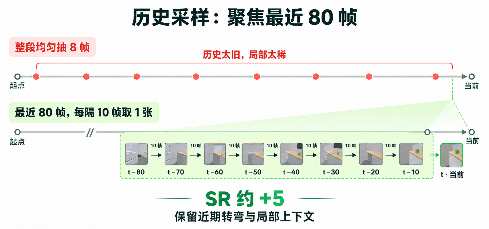
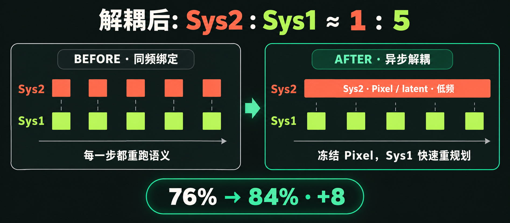
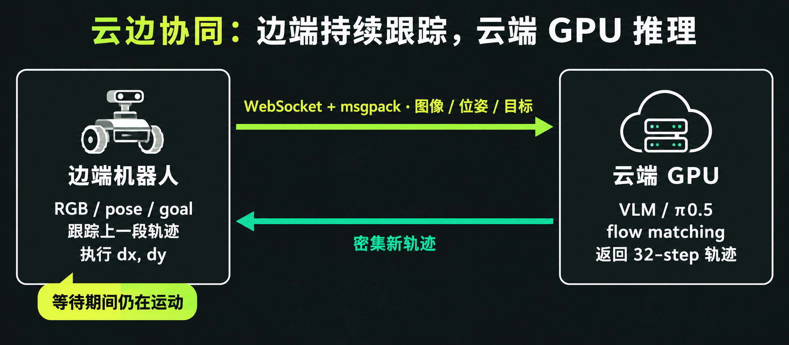
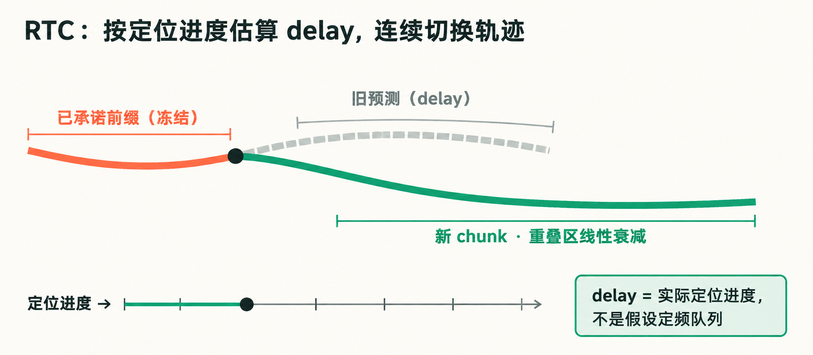
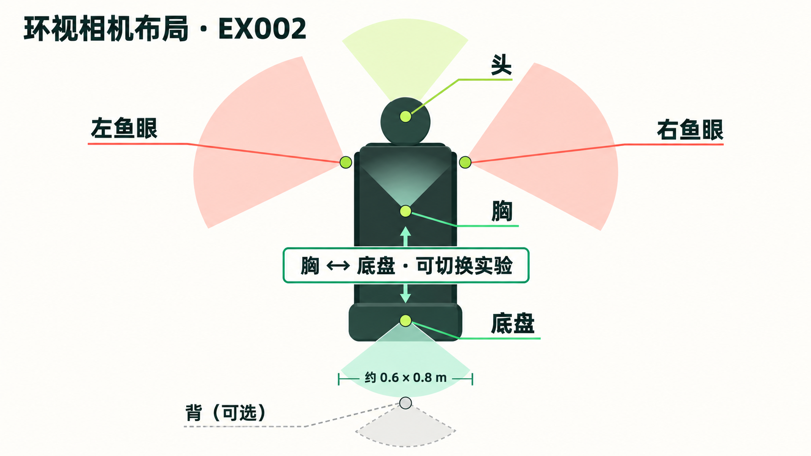

目标形态不统一
坐标、物体名、一句话指令，传统规划各接一套。
我做的是相机-only 导航底座。输入只有 RGB、定位 / 目标点、文本。上层拆任务，这里统一走点导航、物体导航、指令跟随。

是换任务、换本体就要重做接口。所以先定一句话：所有任务都交到同一个视觉目标上。
坐标、物体名、一句话指令，传统规划各接一套。
要推断该去哪找，不是纯搜路。
不同机器人有不同视角和相机数量；上层输出目标，运动模块统一生成连续轨迹。
输入包含 RGB、定位与任务目标；PointNav 需要当前位置和目标点，物体与指令导航还需要文本。
语义要看得远；运动要反应快。显式像素可检查，隐式 latent 补容量。
指令 · 历史 · 当前画面 → 往哪走、要不要转。
连续轨迹 · 局部避障 · 按真实车体走。

三件事：别打转、把离散动作编码成 Pixel Goal、头看物体底盘定脚。然后自动标，并改掉最远点贴墙。
目标已在画面里仍左右扫。先验：可见点优先前进；出视野才转向；<1 m 停止。PointNav 后处理：过度旋转且目标已在视野内 → 强制 Sys1 推进，不再让 Sys2 发 TURN。

可见目标输出图像内的 (u, v)；目标在视野外或需要停止时，把左转、右转、停止等离散动作编码成特殊 Pixel Goal。这样所有语义决策都走同一种输出格式。
[PointNav] Return exactly one pixel goal (u, v).
Prefer FORWARD … (0,240) LEFT · (639,240) RIGHT · (320,479) STOP
头：高处物体。底盘：近场障碍和可行走。像素坐标出在底盘图上。
位姿 + 深度 + 未来轨迹 → 投影到底盘图 → 去掉遮挡。


最远点常落在障碍边缘。先改中心点，再约束整条像素轨迹。只给最终点 53%，3 m 局部点 59% —— 远程终点不够。
| 失败 | 改动 | SR |
|---|---|---|
| 最远点贴障 | 改为中心 pixel | 50% → 61% |
| 只监督一个点仍偏 | 仅中间点（500 ep） | 68% |
| 可通行带没学到 | Pixel Traj：可见自由空间采样 | 65% → 72% |

窄道卡门 → 历史进运动 → 深度碰障 → 参考路径 → 把安全距离收紧。数字挂在同一次评测链上。
点导航的硬点是过窄通道。圆形障碍模型不能直接对比。

没有机器人历史状态和语义条件，模型不知道刚才的朝向与运动趋势，转弯时容易左右摆动。加入历史位姿、当前状态和语义目标后，转弯场景 +2。
训练时把底盘深度反投影成鸟瞰点云，对离障碍过近的预测路点施加软惩罚；推理时不维护第二套地图。它主要缓解窄通道碰撞，以及绕障时容易擦边的问题。
只给最终点时，分叉入口容易选错。每 3 m 增加一个局部方向参考点，提示该从哪个入口进入，同时仍由运动模块生成连续轨迹。
在碰撞约束和局部参考点的基础上，30 cm 的安全余量过于保守，窄通道里容易判定无路可走；收紧到 10 cm 后，近障通过率明显提升。

拐点外凸会刮障。

前面把“往哪走、别撞”做对。这里解决：历史怎么用、推理频率、训练怎么扛得住。
整段均匀抽 8 帧，路一长就太稀、太旧，近期转弯容易丢失。历史改为最近 80 帧、每隔 10 帧一张，约再 +5。

同频既浪费语义模型，轨迹也不稳。解耦后，Sys2 : Sys1 的异步更新频率约为 1 : 5：语义低频更新 Pixel / latent，运动在固定锚点上高频更新轨迹。训练与推理采用一致的调度策略。

两系统强绑定，算力耗在重复的语义前向。
44 h运动模块读缓存，自己迭代。
4.8 h 8.3×
仿真评测 GPU 大约只用 20%：环境步进偏串行，并行后才能喂满卡。
同一套导航任务，换成一次前向出轨迹。部署用云边；动作跳变用 RTC 接上。

26 维状态离散成文本 token，走语言通路，不是连续向量硬塞进 expert。
通过 WebSocket + msgpack 传输图像、位姿与目标；云端 GPU 推理并返回密集轨迹，边端在等待期间继续跟踪旧轨迹。

用定位进度估算 delay，冻结已经承诺的前缀，对重叠区的约束权重线性衰减，让新旧轨迹连续衔接。

过近、转弯撞、多路选错。相机从双目扩到环视时，Pixel Goal 怎么标、转弯谁来出，要先定。
数据里放大本体宽度
深度进入碰撞约束
深度进模型 + 参考路径

输出不变。改动小，环视价值弱。
affordance + target。各相机“最远可见点”不一致，语义端会歧义。
直接让模型学，类似 AbotN1。
全局只留最远的一个可见点。无歧义，但要知道在哪张图出点。
footprint 四顶点可见才取中心；沿轨迹法向平移得到可通行像素带，再采样 Pixel Goal。
环视下几乎总能看见可走像素，转向不再由语义端用“看不见”触发，改由运动端学 dx, dy = 0、dyaw ≠ 0。
覆盖长距离导航、物体目标导航与复杂环境避障，展示系统表现及典型失败案例。
矩形 footprint 0.70×0.60 m，stop 0.8 m：97 / 100。
条形是问题链上的逐步改动，不和 97% 榜单混比。
| 设置 | 数据 | R2R Success | R2R SPL | R2R NE↓ | RxR Success | RxR SPL | RxR NE↓ |
|---|---|---|---|---|---|---|---|
| InternVLA | VLN-CE 100% | 79.43 / 62.81 | 72.75 / 62.81 | 2.54 / 4.16 | 68.59 / 59.55 | 58.24 / 50.11 | 3.99 / 4.73 |
| LoRA r32 | VLN-CE + 15K | 64.9 / 70.74 | 64.6 / 69.8 | 4.54 / 4.08 | 53.21 / 55.0 | 50.5 / 52.4 | 6.72 / 5.82 |
偏离参考路径后重新找到前进方向。